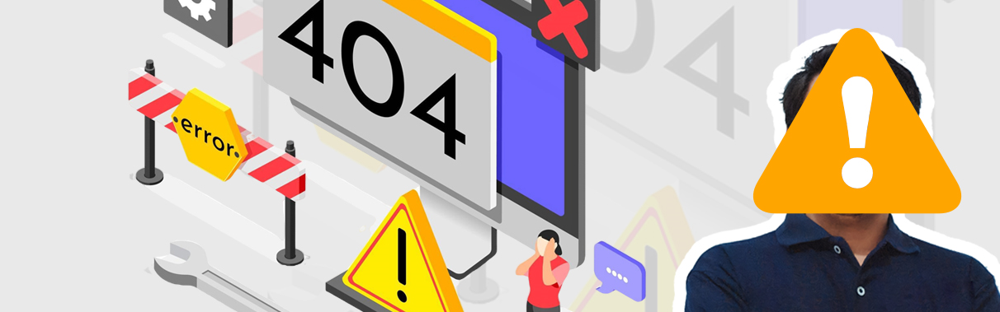

WEBDEV ECOSYSTEM
PUSAT KONTROL WEBDEV
Tampil beda dan menonjol di setiap live dengan visual overlay dinamis dan elegan.
STANDBY MODE
Koneksi Akun Stream TikTok dan YouTube
YOUTUBE LIVE
BELUM TERHUBUNG
VIDEO ID / URL YOUTUBE
SUMBER LIVE
Belum terhubung
STATUS LIVE
OFFLINE
server-console | WebDev
LIVE
Developer Account
ONLINE

WebDev
@webdevoverlaystreamKendala Gagal Connect?
- Pastikan akun TikTok target sedang dalam posisi LIVE.
- Pastikan username yang diinput benar dan tidak menggunakan tanda '@'.
- Nonaktifkan IPv6 di Network Adapter Windows jika aplikasi macet/lama di status connecting.
- Periksa koneksi jaringan, coba restart router, atau gunakan jaringan hotspot HP / VPN.
- Pastikan Windows Firewall atau Antivirus tidak memblokir koneksi port aplikasi.
Panduan Penggunaan
- Klik Monitor Chat untuk membuka window khusus pantauan chat secara terpisah.
- Gunakan Salin Url Dock untuk menempelkan link overlay ke Dock link OBS.
- Jika overlay tidak update di OBS, centang opsi "Refresh browser when scene becomes active" di properti OBS.
- Paling aman jika overlay tidak muncul di OBS pastikan aplikasi Webdev Overlay Stream pertama dibuka setelah itu buka Aplikasi OBS/Tiktok Live
WEBDEV AFFILIATE
PROGRAM AFFILIATE WEBDEV
Bagikan aplikasi WebDev menggunakan kode promo dan dapatkan komisi dari penjualan yang valid.
Normal: Rp500.000
Promo: Rp350.000
Komisi: Rp50.000
Cara Kerja Affiliate
- Gunakan kode promo milikmu.
- Bagikan kode promo dan link claim ke calon pembeli.
- Calon pembeli memasukkan kode promo di halaman claim.
- Harga pembeli menjadi Rp350.000.
- Calon pembeli diarahkan ke WhatsApp Admin WebDev.
- Admin memvalidasi pembayaran dan membuat lisensi.
- Jika valid, pemilik kode menghubungi Admin untuk proses komisi.
Aturan Program
- Komisi dibayarkan manual setelah pembayaran dikonfirmasi.
- Satu pembeli hanya dihitung satu kali.
- Gunakan kode promo secara jujur dan tidak untuk klaim palsu.
- Admin berhak memvalidasi atau menolak klaim yang tidak sesuai.
- Member yang berhasil mendapatkan pembeli dipersilakan menghubungi Admin WebDev.
Kode Promo Saya
Kode promo custom
Kode promo digunakan untuk mengenali penjualan yang berasal dari member.
Validasi dan komisi diproses manual oleh Admin WebDev.
Link Claim Pembeli
Bagikan link ini bersama kode promo kepada calon pembeli.
https://antoyusri021-debug.github.io/WD-ENGINE-Themes/#claim-voucherData yang Harus
Dikonfirmasi ke Admin
Pastikan calon pembeli mengonfirmasi empat data berikut kepada Admin WebDev:
DATA 1
Nama Pembeli
DATA 2 Nomor WhatsApp
DATA 3
Kode Promo
DATA 4 Harga Promo
Data ini diperlukan untuk memvalidasi pembelian, menghubungi calon
pembeli, dan membuat lisensi aplikasi.
Support Donatur
Terima kasih kepada seluruh supporter yang telah menjadi bagian dari perjalanan aplikasi ini. Setiap dukungan yang diberikan membantu menghadirkan fitur baru, perbaikan sistem, dan pengembangan yang lebih baik ke depannya.
Ingin menjadi bagian dari pengembang aplikasi ini?